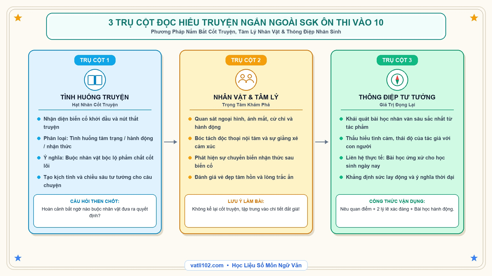

Bí Kíp Chinh Phục Đọc Hiểu Truyện Ngắn Ngoài SGK Ôn Thi Vào 10: Khai Thác 3 Trụ Cột Vàng
Trong cấu trúc đề thi tuyển sinh vào lớp 10 môn Ngữ văn hiện nay, phần đọc hiểu văn bản truyện ngắn ngoài sách giáo khoa là một trong những dạng bài phân hóa học sinh rất rõ rệt. Không ít bạn thường mắc lỗi tóm tắt lại toàn bộ câu chuyện thay vì đi sâu phân tích diễn biến tâm lý nhân vật, hoặc trả lời câu hỏi đọc hiểu quá sơ sài khiến bài thi bị trừ điểm đáng tiếc.
Để xử lý trọn vẹn dạng đề này, các em chỉ cần nắm vững mô hình 3 Trụ cột vàng: Tình huống truyện $\rightarrow$ Nhân vật $\rightarrow$ Thông điệp nghệ thuật. Đây là chìa khóa giúp các em bẻ khóa mọi văn bản truyện ngắn dù chưa từng đọc qua trước đó.
1. Ba trụ cột cốt lõi của một tác phẩm truyện ngắn
Một tác phẩm truyện ngắn hay thường có dung lượng cô đọng nhưng lại chứa đựng sức chứa tư tưởng rộng lớn. Khi tiếp cận văn bản, các em cần bám sát 3 yếu tố sau:
- Trụ cột 1 - Tình huống truyện (Hạt nhân phát triển): Là hoàn cảnh đặc biệt, sự kiện bất ngờ hoặc nút thắt kịch tính buộc nhân vật phải bộc lộ tính cách và phẩm chất thật của mình.
- Trụ cột 2 - Nhân vật & Diễn biến tâm lý (Trọng tâm cảm xúc): Không chỉ nhìn vào ngoại hình hay hành động bề ngoài, mà cần chú ý đến những độc thoại nội tâm, sự ngập ngừng và chuyển biến nhận thức của nhân vật sau biến cố.
- Trụ cột 3 - Thông điệp nghệ thuật (Giá trị đọng lại): Bài học cuộc đời, thái độ yêu thương con người và triết lý sống mà nhà văn muốn gửi gắm qua câu chuyện.
2. Sơ đồ Sketchnote: 3 Trụ cột đọc hiểu truyện ngắn

3. Phương pháp trả lời chuẩn 4 mức độ câu hỏi đọc hiểu
Mức 1: Nhận biết (Hỏi gì trả lời nấy, trích xuất chính xác)
Các câu hỏi thường gặp: Xác định ngôi kể, nhân vật chính, chi tiết miêu tả ngoại hình/hoàn cảnh. Với câu hỏi này, các em chỉ cần tìm đúng từ ngữ trong văn bản và trích dẫn trực tiếp vào bài làm ngắn gọn trong 1-2 dòng.
Mức 2: Thông hiểu (Giải thích ý nghĩa chi tiết & hành động)
Câu hỏi tiêu biểu: Vì sao nhân vật lại có hành động như vậy? Chi tiết chiếc áo cũ / giọt nước mắt mang ý nghĩa gì? Khi trả lời, các em cần liên kết hoàn cảnh câu chuyện với thế giới nội tâm của nhân vật để giải thích một cách hợp lý và nhân văn.
Mức 3 & 4: Vận dụng (Rút ra bài học & Liên hệ bản thân)
Câu hỏi tiêu biểu: Em có đồng tình với cách ứng xử của nhân vật không? Bài học tâm đắc nhất em rút ra là gì? Cấu trúc trả lời chuẩn gồm 3 phần: Nêu rõ quan điểm (Đồng tình / Không đồng tình) $\rightarrow$ Đưa ra 2 lý lẽ thuyết phục $\rightarrow$ Liên hệ bài học hành động cho học sinh ngày nay.
4. Đề luyện thực hành & Gợi ý chấm điểm chi tiết
- Câu 1 (0.5 điểm): Xác định ngôi kể của đoạn trích trên.
-> Gợi ý: Ngôi kể thứ ba (người kể chuyện giấu mình).
- Câu 2 (1.0 điểm): Hành động 'lặng lẽ lấy chiếc khăn ẩm lau sạch vết bùn' thể hiện nét đẹp gì trong tâm hồn cậu bé?
-> Gợi ý: Thể hiện sự hiếu thảo, tinh tế và lòng biết ơn sâu sắc của người con khi thấu hiểu nỗi nhọc nhằn, đức hy sinh thầm lặng của người cha.
- Câu 3 (1.5 điểm): Rút ra 01 bài học cuộc sống ý nghĩa nhất đối với em sau khi đọc đoạn trích.
-> Gợi ý: Bài học về lòng biết ơn đối với cha mẹ: Hạnh phúc đích thực không nằm ở giá trị vật chất của món quà, mà nằm ở tấm lòng yêu thương và sự thấu cảm giữa những người thân trong gia đình.
5. Bảng tổng hợp các dạng tình huống truyện kinh điển
| Loại tình huống | Đặc điểm nhận diện | Ý nghĩa nghệ thuật & Tác động |
|---|---|---|
| Tình huống tâm trạng | Xoay quanh diễn biến giằng xé nội tâm, sự thức tỉnh lương tri. | Khám phá chiều sâu tâm hồn và phẩm giá người lao động. |
| Tình huống hành động | Gặp biến cố bất ngờ buộc nhân vật phải đưa ra quyết định sống còn. | Bộc lộ bản lĩnh, lòng dũng cảm hoặc sự hi sinh cao cả. |
| Tình huống nhận thức | Nhân vật vỡ lẽ ra một sự thật trái ngược với suy nghĩ ban đầu. | Mở ra bài học triết lý sâu sắc, thay đổi nhân sinh quan. |
6. Checklist 4 bước xử lý câu hỏi đọc hiểu văn xuôi
- ✓ Xác định dung lượng yêu cầu: Câu 0.5 điểm viết 1-2 dòng; câu 1.0 điểm viết 3-4 dòng; câu 1.5 điểm viết thành đoạn ngắn 5-7 dòng.
- ✓ Tránh sao chép nguyên văn: Với câu thông hiểu, cần diễn đạt lại bằng ngôn từ của chính mình.
- ✓ Trình bày gạch đầu dòng rõ ràng: Giúp thầy cô chấm thi dễ dàng nhận thấy các ý đạt chuẩn điểm.
- ✓ Kiểm tra chính tả và dấu câu: Đảm bảo câu trả lời trọn vẹn ngữ pháp, không cụt lủn.